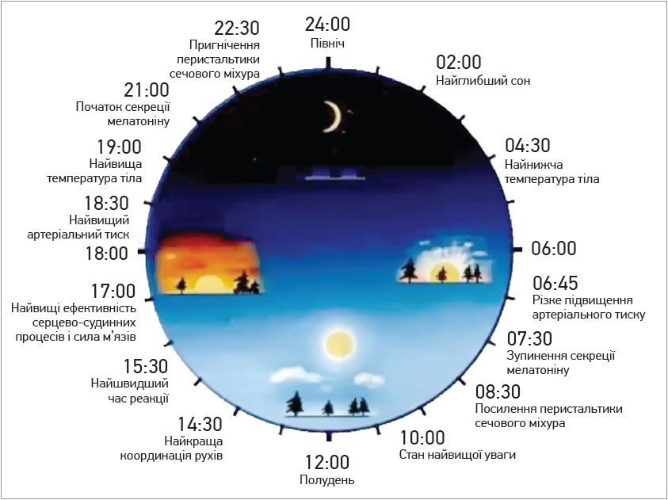

Що таке здоровий спосіб життя?
Всі ми хочимо жити довго і щасливо, всі ми замислюємося про майбутьнє, всі ми поки молоді думаємо, що старість далеко і те що ми робимо з нашим тілом в молодості, нас не доторкнеться в старості. Я пам'ятаю, як мені сказав тесть про старість:-"Я і гадки не мав, як же вона прийшла дуже швидко." Замислюючись над його слова, я шукав, шукав принципи здоров'я. Я мислив, неможливо займатися тільки здоров'ям тіла. Ми повинні бути здорові також на рівні емоцій, ментально стійкою людиною, займатися духовним здоров'ям. Ми повині об'єднати в одне ціле тіло, розум і дух, такий собі трикутник, який дасть нам енрергію. Виходячи з цього у мене сформувалися п'ять приципів, я називаю їх п'ять принципів здоро'я
П'ять принципів здоров'я
- розпорядок дня
- харчування
- фізична активність
- дихання
- медітація
Розпорядок дня
Основа здорового способу життя - правильний розпорядок дня. Правильний розпорядок дня впливає на нашу прапрацездатність, наш психологічний стан і звісно на те, як працює наш організм. Важливо синхронізувати наш розпорядок з циркадними ритмами природи. Циркадний годинник визначає денні ритми багатьох фізіологічних процесів. Циркадні ритми, притаманні людям, які прокидаються рано, обідають опівдні та сплять усю ніч, представлені на рисунку.
Хоча циркадні ритми демонструють тенденцію до синхронізації з циклами «світло/темрява», їх суттєво коригують такі фактори, як знижена температура, години прийому їжі, стрес і фізичні навантаження.
Рекомендована тривалість сну – 8 год. Скорочення цього проміжку асоціюється з ризиками та загрозами. Наразі проблеми зі сном наявні у 30% населення розвинених країн.Негативні наслідки зазначеного явища з’являються не одразу, а у віддаленій перспективі. Зокрема, дефіцит сну пов’язаний з порушенням когнітивних функцій і погіршенням емоційного стану, є фактором ризику серцево-судинних захворювань, деменції, ожиріння, цукрового діабету, депресії, що в результаті спричиняє підвищення рівня загальної смертності «Безсонні ночі скорочують дні», – стверджував Френсіс Бекон. Якщо ж позбавити це твердження лірики, висновок сумний: хто мало спить, той швидше помре.
Одна з основних причин масового збою циркадних ритмів у живих організмів (від одноклітинних до людини) – світлове забруднення довкілля, тобто надмірна кількість штучного освітлення (Kuba C. C.M. et al., 2020).
Також у переліку провокувальних факторів такі:
- споживання надмірної кількості кофеїну (кави, чаю);
- вплив блакитного світла екранів;
- штучно підвищена температура приміщень (десинхронізація з пониженням температури в природі після заходу сонця);
- соціальний пресинг (ранкові пробудження на роботу, до якої все довше й складніше діставатися).
Xарчування
Харчування також лягає в циркадні ритми, із-за сучасного ритму життя, ми втратили культуру приготування і вживання їжи. Темп сучасного життя вплинув і на харчування, з'явилися такі заклади, як місця швидкого харчування. Із-за темпу життя і стресів ми дуже багато вживаємо швидких углеводнів, алкогольних напоїв. Під час великого застілля, ми переїдаємо і перегружаємо нашу систему травлення
Основами здорового харчування є збалансування:
- білків
- твариного походження
- молочні продукти
- море продукти
- м'ясо тварин вільного випасу
- рослиного походження
- бобові і соєві продукти
- злакові
- насіння і горіхи
- проростки
- твариного походження
- жирів
- насиченних
- ненасиченних
- Омега 9
- Омега 6
- Омега 3
- вуглеводнів
- швидких
- повільних
Вуглеводні являються паливом для нашого мозку,
Фізична активність
"Той, хто покинув займатися фізичними вправами часто чахне,
бо сила його органів слабне внаслідок відмови від рухів." Ібн Сіна
Регулярні фізичні вправи і фізична активність можуть зробити дива із нашим здоров’ям та тілом. Фізична активність допомагає запобігти хворобам серця, діабету, остеопорозу, а також безлічі інших захворювань, і є ключовою умовою для схуднення та підтримки здорової ваги.
Незважаючи на всі ті переваги і для здоров’я, і для хорошого самопочуття,і гарного зовнішнього вигляду, лише біля 1% (!) людей в Україні отримують достатні фізичні навантаження або використовують свій вільний час для фізичної активності.
Регулярна фізична активність і є тим лікарем, який:
- Підвищує ваші шанси прожити довше і здоровіше життя
- Допомагає захистити вас від розвитку хвороб серця та судин, високого кров’яного тиску і високого рівня холестерину
- Допомагає захистити вас від певних форм раку, в тому числі прямої кишки і раку молочної залози
- Допомагає запобігти діабету 2 типу , а також ускладнення його наслідків (ускладнень зі сторони сердцево – судинної, ендокринної систем, зору і т.і.)
- Допомагає запобігти підступним втратам кісткової тканини – остеопорозу
- Покращує координацію рухів, чим знижує ризик падіння у літніх людей
- Полегшує симптоми депресії і тривоги і покращує настрій
- Допомагає керувати своєю вагою
Нещодавні дослідження показали, що регулярна фізична ативність поліпшує інтелектуальні здібності людини, попереджує її зниження, що часто трапляється з віком, та знижує ризик інсульту.
Дихання
Ми дихаємо 24 години 7 днів на тиждень, а усвідомлюємо ми цей процес: під час роботи, під час відпочинку, та навіть під час заняття сексом. Дихання в ту чи іншу хвилину, може розповісти в якому емоційному стані находиться людина. І ми, займаючися техніками дихання, находимо зв'язок між нашим тілом, нашим розумом і емоціями. І знайшовши цей звязок ми стаємо більш стійкими до змін, які навколо нас.
Медітація
Вміння спостерігати за внутрішнім і зовнішнім світом. Бути в контакті з зовнішнім світом через свій внутрішній і навпаки з внутрішнім через зовнішній світ.Всі ці п'ять принципів пов'язанні між собою і впливають один на одного, для кращого розуміння їх треба розглядати, як пальці на нащій лодоні. Кожен палець окремо не представляє сили, а коли зібрати пальці в кулак, або разом, то це сила.